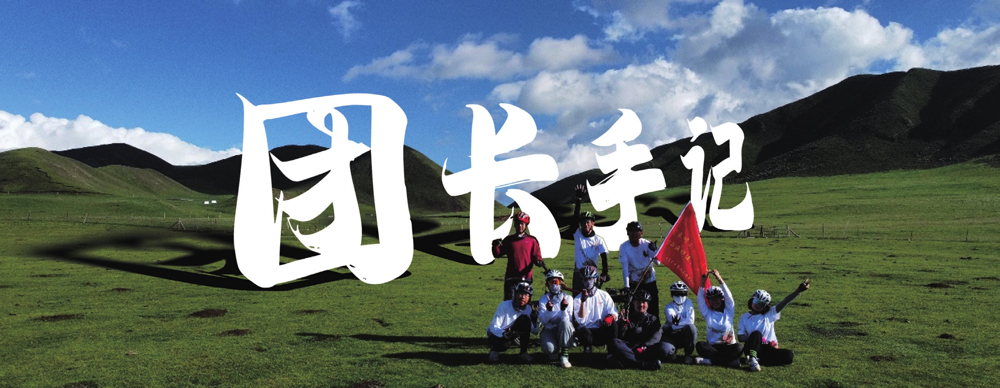
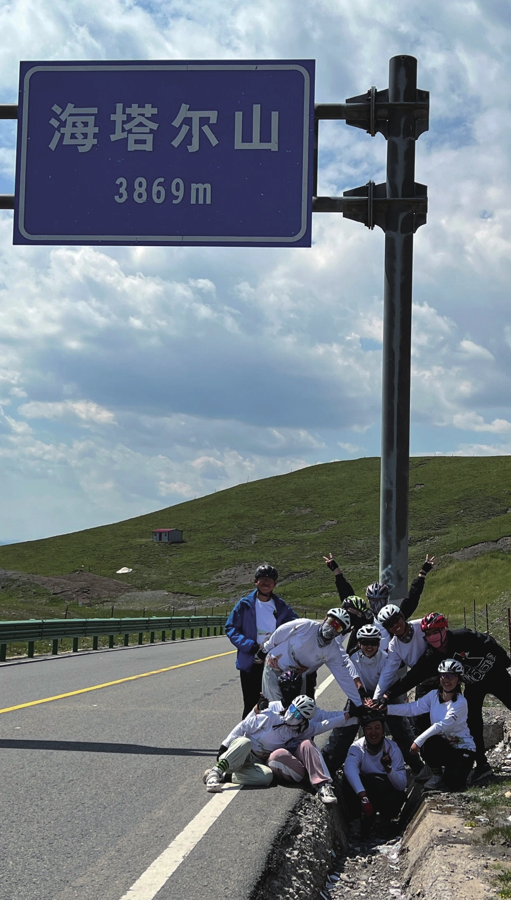
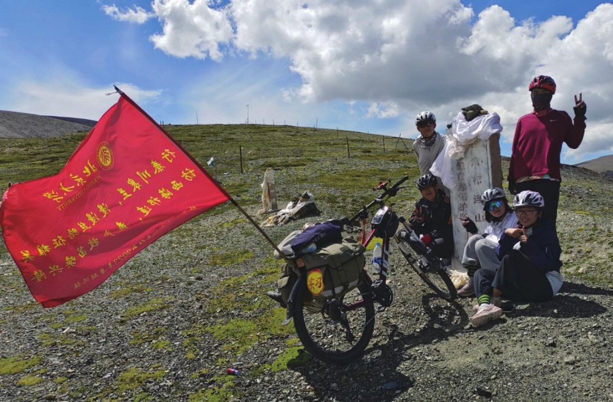
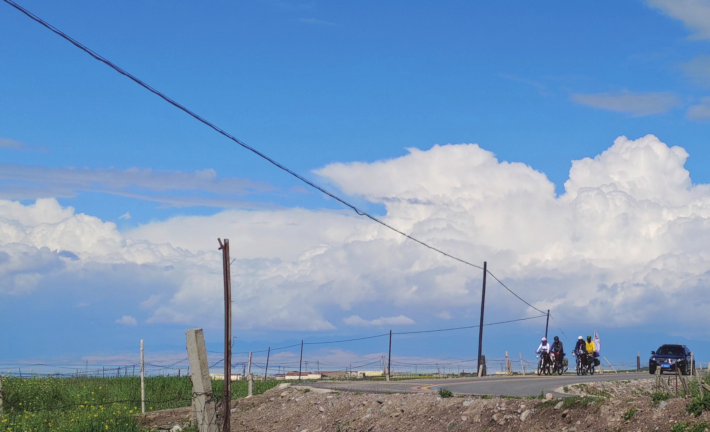
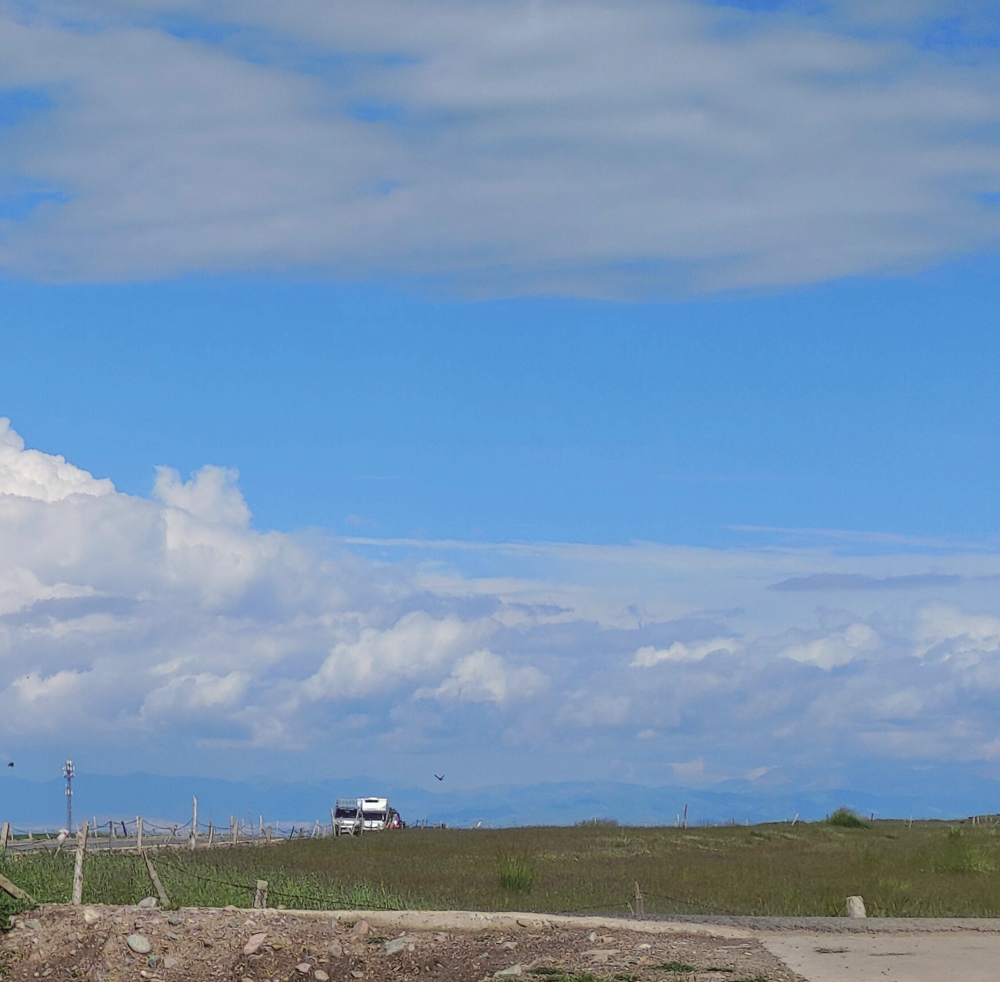

团长手记
原刊95
基本概况
2023 年 6 月 5 日，北大车协2023 暑期远征飞行团在“北大车协御用餐厅”老蜀人成团。在经历了一个多月的期末季和暑期筹备工作后，23 飞行团留京四人于 7 月 10 日集体由北京出发前往西安，其余团众由实践地等前往西安，于 7 月 12 日晚在陕西省西安市全员集合，7 月 13日正式开始骑行。经过 27 天的行程，经历多次临时路线调整，克服高原反应、恶劣天气等因素，最终于 8 月 8 日完成约 2000km的骑行，到达暑期的终点甘肃省嘉峪关市，其中约有 700km 于3000m 以上的高原骑行，翻越海拔超过 3500m 的三个高山垭口。全程除起点西安、终点嘉峪关外，沿途共设平凉市、兰州市、西宁市、甲乙村（江西沟镇）、哈尔盖镇、祁连县、张掖市 7 个休整点。
我站在北方的楼宇中，遥想西北的山川与高原——
人员组成与职务安排
考虑到 23 暑期队员整体人数较少，今年三团人数均略少于往年，且由于飞行团行程相对灵活，有更大的容错空间，因此分团时基本按照“两个大团一个小团”的思路，飞行团规模相对较小，由 11 名亲爱的团众组成，6 男 5 女，年龄分布相对集中，以低年级本科生为主。团内有押后 7 人，其中有 2 人曾有技术组考核经验；队医 11 人，有 2 人有队医组考核经验，另有 1 人为高年级医学生，押后、队医数量相对充足，水平足以处理暑期沿途可能遇到的各种情况；11人均担任过协会拉练职务，4人曾担任拉练队长，对协会出行模式、基本职务职责有充足的了解。
职务安排上，团内全程设财务、押后负责、队医负责、摄影 DV 负责和社考负责（以及团长）；每日职务方面，由于团内人数较少，平时职务安排面临较大压力，但仍按照传统暑期团单日职务安排，设前旗助、后旗押后队医、两组前站、队记和备件包、社考负责，并将摄影合并至前站。实际骑行过程中，由于体力分配、受伤生病等原因，多次临时调整合并职务，但每一位团众每一天都完美地完成了自己的任务。另外，团长本人持“每一位团众都应充分体验每一种能担任的职务”的理念，并最终保证所有团众不会因体力等因素错过担任前后旗等职务的机会。
行前准备
整体上可以分为以下模块：
1. 报备分为两部分，一方面是向团委提交暑期活动报备（约 6.5-6.9），另一方面是暑期沿途实践立项（约 6.15-6.20）。除必须由暑期队员亲自填写的部分，协会统一填写的部分应由各位团长和组织部长尽早完成。
2. 职务介绍与安排成团后尽快发布问卷了解各位团众职务意愿，充分考虑意愿和个人能力后确定各全程职务。第一次团会（6.10 晚）介绍职务内容、大致行程安排和纪律；第二次团会（6.27 晚）由各全程职务介绍。
3. 车辆与药品准备与外联部对接，统计团内购车的尺寸；由押后负责准备货架、挡泥板等车辆配件和备件包；队医负责统计团众基本身体情况，准备药品；组织集体检车；安排车辆托运（行前一周左右），一般可选择中铁快运。


药品和车辆准备具体情况见论坛上的队医押后日志。
4. 体能建设客观的说，23 暑期爬升较少，但鉴于是协会 18 年以来第一次再上高原，为预防高原反应，我们比较重视体能准备，尤其是心肺能力的提高。因此，在文体部组织的恢复性训练中，我们适当提高了心肺训练的比重。另外，今年的行前体能建设也尝试结合 318 的骑行台进行针对性的、更科学化的间歇训练。未来也可以将 FTP 等“车队训练概念”更多引入暑期行前体能建设中，向暑期队员普及更科学的训练理念、竞技知识。
又及：7 月初环法已经开始了，组织有兴趣的会员集体观赛也不是不行。
5. 路线设计一些我设计路线会考虑的原则：
（1）总体强度分配：理论上，一条暑期路线一般包含以下部分：适应骑行节奏段、较高强度增强体能段、强度降低恢复段、最大强度高光段、收尾段。从这个角度来说，2023 年暑期路线“西安—兰州—青海湖—嘉峪关”非常符合这一理论：从西安到平凉，每日里程相对较短，爬升相对较少，作为暑期前期寻找骑行节奏、团队磨合的时期；平凉—兰州翻越六盘山，单日最大爬升后连续几天强度较低，作为拉体能和超量恢复的时期；兰州—海晏全程缓上近似平路，单日里程在 100km 左右，恢复和适应；海晏—哈尔盖环湖路段，单日里程短，爬升可忽略，但海拔基本在 3200m 左右，是高海拔适应；哈尔盖—肃南连续翻越 3869m，4120m，4150m 三个高山垭口，强度大海拔高，是暑期的高光时刻；肃南—嘉峪关，基本为平路，是暑期的收尾。
（2）单日强度和组合强度：一般来说，可以用里程和累计爬升估算单日强度，但实际上行者给出的爬升往往并不准确，可以计算评级坡总爬升和海拔落差，更准确地估算强度。此外，影响单日强度的因素还有很多，如海拔（如在高原必然有体力下降）、路况（烂路会加大强度）、是否有季节性逆风（如祁连—野牛沟乡段）等等，因此在条件允许时，路线设计者最好尽可能充分地了解这条路线的具体情况。
在了解单日强度基础上，需要考虑路线的组合强度，如连续三至四天的中等强度实际骑下来可能会很累、休整日前后可以相对大强度一点等等，具体不再赘述。


（3）安全性：协会出行的底线是安全，因此对于高发地质灾害、路况奇差、住宿点治安相对较差的路线，需要谨慎考虑（当然，具体的信息获取也许不是很准确，但路线设计者应做到心中有数）。
（4）住宿条件：考虑两个方面，一是能否找到住宿点，一般县以上的基本一定能找到，镇或以下最好提前了解是否能住宿；二是住宿海拔，应尽可能让住宿海拔低一些，降低夜间高反的可能性。
（5）吃喝玩乐：在保障安全和强度设置合理的情况下，最好丰富骑行的体验和休整日可吃喝玩乐的内容。
（6）挑战性：同上，在保证安全的前提下，需要为暑期路线设置高光时刻，如翻越六盘山、走野牛沟乡等，但需要对团队的整体体能有比较清楚的把握，并设计强度相对低的备选方案，依据团内具体情况临时调整。
路线本身之外的考量：我在设计路线时并未专设路线负责，而是将团内分为若干个小组分组画路线；并未确定好每日路线让大家做“找休息点”一类我认为无意义的工作，而是给出节点城市，让大家自己设计中间每日安排。主要的考量是，让每一位团众对设计暑期路线有参与感，并通过设计路线大致了解每日路线以分配体能（虽然从结果来看，部分人的想法确实只是“给我条路线我去骑就行”）此外，在决定路线时，我很反对简单粗暴的“少数服从多数”，需要对路线进行充分的说明，至少尽可能做到“没有人坚决反对”。
6. 风险预案设计对暑期路上可能出现的严重问题，包括但不限于严重高原反应、团内连续多人生病、紧急路线调整等，方案也许不需要很细致，但要做到心中有数，真的遇到问题能不慌乱，能镇定解决。
除此之外，我们进行了多次团聚，定制了团衫暑期衫车牌等物资，具体在此不再赘述。
一点经验
1. 关于高原骑行（1）前期准备从多个方面来讲：


体能储备：恢复性训练加强心肺能力，318 间歇训练。
药物准备：提前 15 天左右吃红景天，准备高原药物（如蓝氧片、氧气瓶、氧气枕）。
路线设计：海拔上升要渐进，上高原后最好有一段适应期；不应有较大强度，尽可能一天不翻多个垭口。
应急预案：提前了解沿途医院分布，可以准备后援车。
（2）高原骑行高原骑行时，需放缓骑行节奏，多设置休息点；前旗助注意缩紧队伍长度，避免后旗需要追队或队中有人高反得不到队医帮助；前站需要带氧气和药品且氧气和药品需要在队伍各处都有一点；提倡陪骑，多关注队友状态；严格禁酒，并强调尽可能不要服用有镇定效果的药物（如安眠药）；高原紫外线强，注意防晒；高原昼夜温差大，早晨出发时需注意及时穿脱衣物，避免出汗或受凉。
（3）高原雨骑高原天气多变降雨多。下雨时气温很低，很有可能受凉感冒，因此尽可能避免雨骑。若不得不雨骑，需要做好保暖避免失温，下肢的保暖容易被忽略，建议穿分体式雨裤；到住宿点后需要立刻换下湿的衣服，前站应为大家泡板蓝根或姜茶。
（4）行程估计海拔高于 3500m 一般骑行10km 左右或一个小时进行休息，高海拔骑行速度慢、休整多，更需要进行行程估计大致确定骑行所需时间，此外可以结合墨迹天气等软件了解到达某点的大致天气情况，虽然不一定很准，但对避免雨骑还是有帮助的。以飞行团默勒—祁连部分行程估计为例：
第三个休息点：约 37km，海拔 3770m；预计 10:30 到，10:45 出发；天气：10:45 前不下雨，气温 13 度左右，西南风 0.5m/s。


第五个休息点：约 50km 垭口顶，海拔 4120m；预计 13:45 到，发食宿前站；天气：12:18 开始下小雨，15:30 开始下中雨，气温 17 度，东南风 0.8m/s。
之后一路放坡 30km 到祁连，海拔下降 1400m。
2. 生病、发热的处理团内曾出现多人感冒发热的情况。以下方案可能是有用的：
（1）在淋雨后或者团内有人生病发热时，进行全团的体温监测，早发现早干预。
（2）发热的团众视个人状态决定是否要接着骑车。若要骑车，则骑空车且不安排职务；高原发热一律坐车。
（3）已经发热的情况，做体温监测，分房时可以排相对更能照顾人的舍友，并建议尽快去医院查明病因针对治疗。
（4）晚上不便于去医院的，可以视第二天早上状态决定是否送医，团长和队医负责夜间保持手机畅通。
其他想说的话


6 月 3 日团长陈述的时候，我说：
作为团长，对于 23 飞行团，我有以下几点想说：
第一，安全与灵活。我的带团风格可以用“稳”来概括，我不会允许暑期路上出现任何可能对安全有重大危险的事，保证路上团员的生命财产安全，是一切的底线。
第二，团结与沟通。希望你们能主动地帮助队友，也能坦然接受队友的帮助；多理解一点，多包容一点；面对与队友的矛盾，不要一味地自我忍让，积极寻求沟通和解决；也要适当地放下小我成全大我，多为队友考虑一些，多为团队考虑一些。
第三，主人翁意识。23 飞行团不是一个人或者几个人的团，而是我们共同的团，需要每一个团员为之付出。希望你们坚强勇敢，希望你们团结和谐，共同构建一个属于我们的23 飞行团，书写属于我们的精彩暑期！
23 行者们，希望你们热爱骑行，享受暑期；希望你们践行协会“深入社会、融于自然、挑战极限、超越自我”的精神；希望你们用爱去关注团队，用团队去实现梦想；期待与你们一起，踏上我们的暑期远征！
很难说究竟有多少真正实现了，怀疑过自己是否是一个好的团长，是否真的对得起大家的期待；感叹过“如果我当时有更爱大家就好了”……太多的问题对我来说还是混乱的，只能以“我不知道”作答。
但是我知道我很在乎你们，我知道我永远不会忘记和你们一起走过的两千公里，我知道我感谢你们——感谢性格各异，但都真心爱过付出过的你们，感谢忍受了磨合的痛苦，但还愿意敞开心扉拥抱彼此的你们，感谢永远在教我如何爱与被爱的你们。我知道我永远是，且永远只会是2023 飞行团的团儿。
突然想起了在哈尔盖说过的话：希望很久以后当你们面对新会员的时候，还是能骄傲说出：“我是 2023 飞行团的一员。”